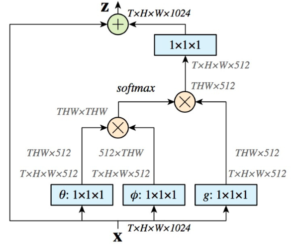

论文：Non-local Neural Networks
作者：Xiaolong Wang, Ross Girshick, Abhinav Gupta, Kaiming He
为解决卷积网络中的long range dependencies问题，论文设计了non-local module来维持更多的信息，它会计算特征所有位置的加权和，这个位置不只有空间位置，还可以是时间，所以non-local还可以用在与序列视频相关的任务上，还很容易和现有模型结合。
卷积是对局部领域内的特征值进行加权求和，是典型的local操作，对于图像上有一定距离的两个像素之间的联系，或者视频里两帧之间的联系，再或者一段话中不同词之间的联系，普通的卷积和循环网络是做不到的，Non-local 的目的就是要捕获这种长距离依赖，它在计算某个位置的特征时，会考虑所有位置特征的加权，包括空间的，时间的或者时空的。实验证明这种方法在很多计算机视觉的任务上都有效果，比如视频分类、图像识别物体检测、物体分割、姿态估计等任务。
1. Non-local 定义
在网络中Non-local计算方式：
$x$ 是特征、图片、视频、序列等类型的输入，输出 $y$ 的大小和输入相同，$f(x_i, x_j)$ 是当前位置的像素点和所有可能关联的位置 $j$ 之间的两两关系，它的大小衡量了 $j$ 对 $i$ 的影响大小，$g(x_j)$ 是输入信号在 $j$ 上的特征值，论文实验显示f 和 g 不同的选择对结果的影响不大，说明 non-local本身的行为才是提升的主要原因。$C(x)$ 是归一化参数。
1.1 与普通conv和recurrent的区别
- 普通的conv操作，比如kernel size = 3 时，相当于（1）式中 $i-1 \le j \le i+1$ ；
- recurrent 相当于(1)式中 $j = i or j = i-1$ ;
1.2 与 FC 的区别
- Non-local 的输出值是受到输入值之间的关系的影响，会保留位置的相关性，而FC 学习的权重是输入到输出的映射，输入值之间 $x_i$ 和 $x_j$ 的关系不会影响输出，缺少了位置上的相关信息；
- Non-local 没有输入大小的限制，得到的输出大小等于输入，而fc需要固定大小的输入和输出；
- fc 通常在网络的最后使用，non-local 是一个更灵活的block，可以很容易插入浅层的网络，和conv层搭配使用。
1.3 $g()$ 的选择
论文为了简化，$g()$选择线性变换：
其中$W_g$ 是通过 1x1 的卷积学到的权重。
1.4 $f()$ 的选择
关于 $f()$ 的选择论文讨论的几种不同的形式：
高斯函数：
其中 $x_i^Tx_j$ 是点乘相似度，归一化参数 $C(x) = \sum\limits_j f(x_i, x_j)$
Embedded 高斯，把x映射到特征空间，在embedding空间计算相似度：
其中 $\theta(x_i) = W_{\theta}x_i$， $\phi(x_j) = W_\phi x_j$ 是两个embedding，归一化参数 $C(x) = \sum\limits_j f(x_i, x_j)$
embedding 点乘相似度：
归一化参数 $C(x) = N$ ，N 是x的个数，不是 f 的和，因为输入的size是变化的，所以把输入size 用作归一化参数。和embedded高斯的区别主要是是否做 softmax。
Concatenation
$[\theta (x_i), \phi (x_j)]$ 表示把 $\theta (x_i)$ 和 $\phi (x_j)$ concat起来，再用 $w_f$ 把concat 的向量转换为标量， $C(x) = N$ 。
self-attention
1.5 和self-attention 对比
self-attention 就是 non-local 中 $f(x)$ 用 embedded Gaussian 的特殊情况，对位置 i ， $\frac{1}{C(x)} f(x_i, x_j)$ 就是计算所有 j 的softmax，即：
和self-attention不同的是，论文发现attention 的形式对当前关注的任务并不是必须的。所以$f()$可以选择其他形式，如 embedding 点乘相似度 或 Concatenation 。
2. Non-local Block
用式（1）构成 non-local block：
$+x_i$ 的设计使得在加入 non-local block 时不需要改变原有的结构，当 $W_z = 0$ 时网络和原始结构完全一样，block结构如下图：

2.1 使用bottleneck减少计算量
把 $W_g, W_\theta, W_\phi$ 的channel 数目减为输入x channel 的一半，$W_z$ 再放大到输入的channel数，形成一个 bottleneck，能够减少一半的计算量。
2.2 使用下采样
先将 x 经过一个max pooling 进行下采样得到 $\hat x$，把式(1) 中的输入 x 改为 x 下采样之后的 $\hat x$ ， 使得计算更加稀疏，可以减少 1/4 的 $f(x_i, x_j)$ 的计算量。